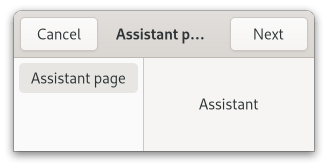

Class
GtkAssistant
Description [src]
final class Gtk.Assistant : Gtk.Window {
/* No available fields */
}GtkAssistant is used to represent a complex as a series of steps.

Each step consists of one or more pages. GtkAssistant guides the user
through the pages, and controls the page flow to collect the data needed
for the operation.
GtkAssistant handles which buttons to show and to make sensitive based
on page sequence knowledge and the GtkAssistantPageType of each
page in addition to state information like the completed and committed
page statuses.
If you have a case that doesn’t quite fit in GtkAssistants way of
handling buttons, you can use the GTK_ASSISTANT_PAGE_CUSTOM page
type and handle buttons yourself.
GtkAssistant maintains a GtkAssistantPage object for each added
child, which holds additional per-child properties. You
obtain the GtkAssistantPage for a child with gtk_assistant_get_page().
GtkAssistant as GtkBuildable
The GtkAssistant implementation of the GtkBuildable interface
exposes the action_area as internal children with the name “action_area”.
To add pages to an assistant in GtkBuilder, simply add it as a
child to the GtkAssistant object. If you need to set per-object
properties, create a GtkAssistantPage object explicitly, and
set the child widget as a property on it.
CSS nodes
GtkAssistant has a single CSS node with the name window and style
class .assistant.
Instance methods
Methods inherited from GtkAccessible (10)
gtk_accessible_get_accessible_role
Retrieves the GtkAccessibleRole for the given GtkAccessible.
gtk_accessible_reset_property
Resets the accessible property to its default value.
gtk_accessible_reset_relation
Resets the accessible relation to its default value.
gtk_accessible_reset_state
Resets the accessible state to its default value.
gtk_accessible_update_property
Updates a list of accessible properties.
gtk_accessible_update_property_value
Updates an array of accessible properties.
gtk_accessible_update_relation
Updates a list of accessible relations.
gtk_accessible_update_relation_value
Updates an array of accessible relations.
gtk_accessible_update_state
Updates a list of accessible states. See the GtkAccessibleState
documentation for the value types of accessible states.
gtk_accessible_update_state_value
Updates an array of accessible states.
Methods inherited from GtkBuildable (1)
Methods inherited from GtkNative (5)
gtk_native_get_renderer
Returns the renderer that is used for this GtkNative.
gtk_native_get_surface
Returns the surface of this GtkNative.
gtk_native_get_surface_transform
Retrieves the surface transform of self.
gtk_native_realize
Realizes a GtkNative.
gtk_native_unrealize
Unrealizes a GtkNative.
Methods inherited from GtkRoot (3)
gtk_root_get_display
Returns the display that this GtkRoot is on.
gtk_root_get_focus
Retrieves the current focused widget within the root.
gtk_root_set_focus
If focus is not the current focus widget, and is focusable, sets
it as the focus widget for the root.
Properties
Gtk.Assistant:use-header-bar
TRUE if the assistant uses a GtkHeaderBar for action buttons
instead of the action-area.
Properties inherited from GtkWindow (24)
Gtk.Window:application
The GtkApplication associated with the window.
Gtk.Window:child
The child widget.
Gtk.Window:decorated
Whether the window should have a frame (also known as decorations).
Gtk.Window:default-height
The default height of the window.
Gtk.Window:default-widget
The default widget.
Gtk.Window:default-width
The default width of the window.
Gtk.Window:deletable
Whether the window frame should have a close button.
Gtk.Window:destroy-with-parent
If this window should be destroyed when the parent is destroyed.
Gtk.Window:display
The display that will display this window.
Gtk.Window:focus-visible
Whether ‘focus rectangles’ are currently visible in this window.
Gtk.Window:focus-widget
The focus widget.
Gtk.Window:fullscreened
Whether the window is fullscreen.
Gtk.Window:handle-menubar-accel
Whether the window frame should handle F10 for activating menubars.
since: 4.2
Gtk.Window:hide-on-close
If this window should be hidden when the users clicks the close button.
Gtk.Window:icon-name
Specifies the name of the themed icon to use as the window icon.
Gtk.Window:is-active
Whether the toplevel is the currently active window.
Gtk.Window:maximized
Whether the window is maximized.
Gtk.Window:mnemonics-visible
Whether mnemonics are currently visible in this window.
Gtk.Window:modal
If TRUE, the window is modal.
Gtk.Window:resizable
If TRUE, users can resize the window.
Gtk.Window:startup-id
A write-only property for setting window’s startup notification identifier.
Gtk.Window:title
The title of the window.
Gtk.Window:titlebar
The titlebar widget.
since: 4.6
Gtk.Window:transient-for
The transient parent of the window.
Properties inherited from GtkWidget (34)
Gtk.Widget:can-focus
Whether the widget or any of its descendents can accept the input focus.
Gtk.Widget:can-target
Whether the widget can receive pointer events.
Gtk.Widget:css-classes
A list of css classes applied to this widget.
Gtk.Widget:css-name
The name of this widget in the CSS tree.
Gtk.Widget:cursor
The cursor used by widget.
Gtk.Widget:focus-on-click
Whether the widget should grab focus when it is clicked with the mouse.
Gtk.Widget:focusable
Whether this widget itself will accept the input focus.
Gtk.Widget:halign
How to distribute horizontal space if widget gets extra space.
Gtk.Widget:has-default
Whether the widget is the default widget.
Gtk.Widget:has-focus
Whether the widget has the input focus.
Gtk.Widget:has-tooltip
Enables or disables the emission of the ::query-tooltip signal on widget.
Gtk.Widget:height-request
Override for height request of the widget.
Gtk.Widget:hexpand
Whether to expand horizontally.
Gtk.Widget:hexpand-set
Whether to use the hexpand property.
Gtk.Widget:layout-manager
The GtkLayoutManager instance to use to compute the preferred size
of the widget, and allocate its children.
Gtk.Widget:margin-bottom
Margin on bottom side of widget.
Gtk.Widget:margin-end
Margin on end of widget, horizontally.
Gtk.Widget:margin-start
Margin on start of widget, horizontally.
Gtk.Widget:margin-top
Margin on top side of widget.
Gtk.Widget:name
The name of the widget.
Gtk.Widget:opacity
The requested opacity of the widget.
Gtk.Widget:overflow
How content outside the widget’s content area is treated.
Gtk.Widget:parent
The parent widget of this widget.
Gtk.Widget:receives-default
Whether the widget will receive the default action when it is focused.
Gtk.Widget:root
The GtkRoot widget of the widget tree containing this widget.
Gtk.Widget:scale-factor
The scale factor of the widget.
Gtk.Widget:sensitive
Whether the widget responds to input.
Gtk.Widget:tooltip-markup
Sets the text of tooltip to be the given string, which is marked up with Pango markup.
Gtk.Widget:tooltip-text
Sets the text of tooltip to be the given string.
Gtk.Widget:valign
How to distribute vertical space if widget gets extra space.
Gtk.Widget:vexpand
Whether to expand vertically.
Gtk.Widget:vexpand-set
Whether to use the vexpand property.
Gtk.Widget:visible
Whether the widget is visible.
Gtk.Widget:width-request
Override for width request of the widget.
Properties inherited from GtkAccessible (1)
Signals
Gtk.Assistant::close
Emitted either when the close button of a summary page is clicked,
or when the apply button in the last page in the flow (of type
GTK_ASSISTANT_PAGE_CONFIRM) is clicked.
Gtk.Assistant::prepare
Emitted when a new page is set as the assistant’s current page, before making the new page visible.
Signals inherited from GtkWindow (5)
GtkWindow::activate-default
Emitted when the user activates the default widget
of window.
GtkWindow::activate-focus
Emitted when the user activates the currently focused
widget of window.
GtkWindow::close-request
Emitted when the user clicks on the close button of the window.
GtkWindow::enable-debugging
Emitted when the user enables or disables interactive debugging.
GtkWindow::keys-changed
Emitted when the set of accelerators or mnemonics that
are associated with window changes.
Signals inherited from GtkWidget (13)
GtkWidget::destroy
Signals that all holders of a reference to the widget should release the reference that they hold.
GtkWidget::direction-changed
Emitted when the text direction of a widget changes.
GtkWidget::hide
Emitted when widget is hidden.
GtkWidget::keynav-failed
Emitted if keyboard navigation fails.
GtkWidget::map
Emitted when widget is going to be mapped.
GtkWidget::mnemonic-activate
Emitted when a widget is activated via a mnemonic.
GtkWidget::move-focus
Emitted when the focus is moved.
GtkWidget::query-tooltip
Emitted when the widgets tooltip is about to be shown.
GtkWidget::realize
Emitted when widget is associated with a GdkSurface.
GtkWidget::show
Emitted when widget is shown.
GtkWidget::state-flags-changed
Emitted when the widget state changes.
GtkWidget::unmap
Emitted when widget is going to be unmapped.
GtkWidget::unrealize
Emitted when the GdkSurface associated with widget is destroyed.
Signals inherited from GObject (1)
GObject::notify
The notify signal is emitted on an object when one of its properties has its value set through g_object_set_property(), g_object_set(), et al.